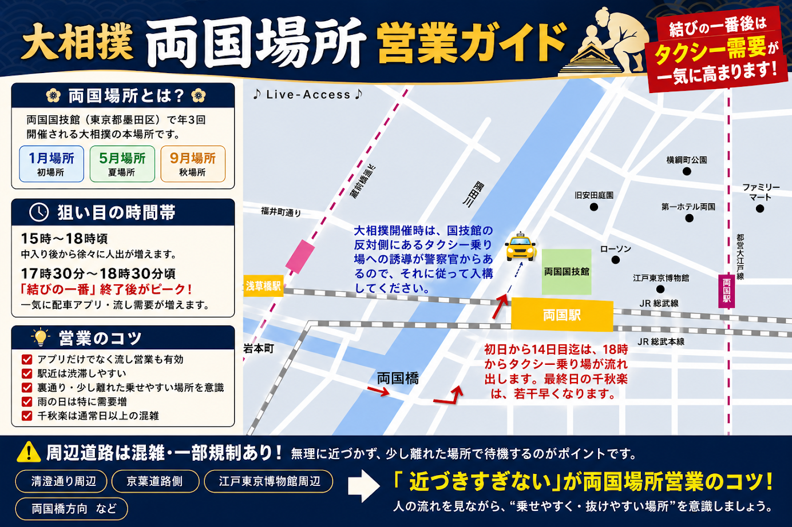

大相撲
大相撲「両国場所」

大相撲「両国場所」
両国国技館 で開催される大相撲の本場所です。
東京では年3回開催されます。
1月場所（初場所）
5月場所（夏場所）
9月場所（秋場所）
特に 土日・千秋楽・結びの一番後 は、一気にお客様が動くため周辺は非常に混雑します。
営業ポイント 🚖
結びの一番後が最大の動き終了直後は国技館周辺にタクシー待ちのお客様が集中します。
特に…ご年配のお客様グループ客駅混雑を避けたいお客様ホテル・東京駅方面へ向かうお客様の利用が多い傾向ですし、ミドル客、ロング客も多い乗り場です。製作者本人の経験談ですと、大宮ソニックシティがありますし、羽田空港へは何度も行きました。
注意ポイント ⚠️
周辺道路は混雑
国技館正面付近は人と車で非常に混み合います。
乗り場の方が単価は望めますが、タクシーの行列が出来るので、乗せるまでに時間がかかる事も多いので、清澄通り(江戸東京博物館周辺)、京葉道路周辺などで手上げのお客様をお乗せするのもひとつです。
狙い目の時間帯 ⏰
18時頃の「結びの一番」終了後がピーク。
一気に配車アプリ・流し需要が増えます。
但し、最終日の千秋楽は、優勝決定戦・表彰式がある為に、結びの一番の時間が早まるので、17時半頃からピークが始まりますが、NHKラジオの相撲中継を頼りにする事をお勧めします。